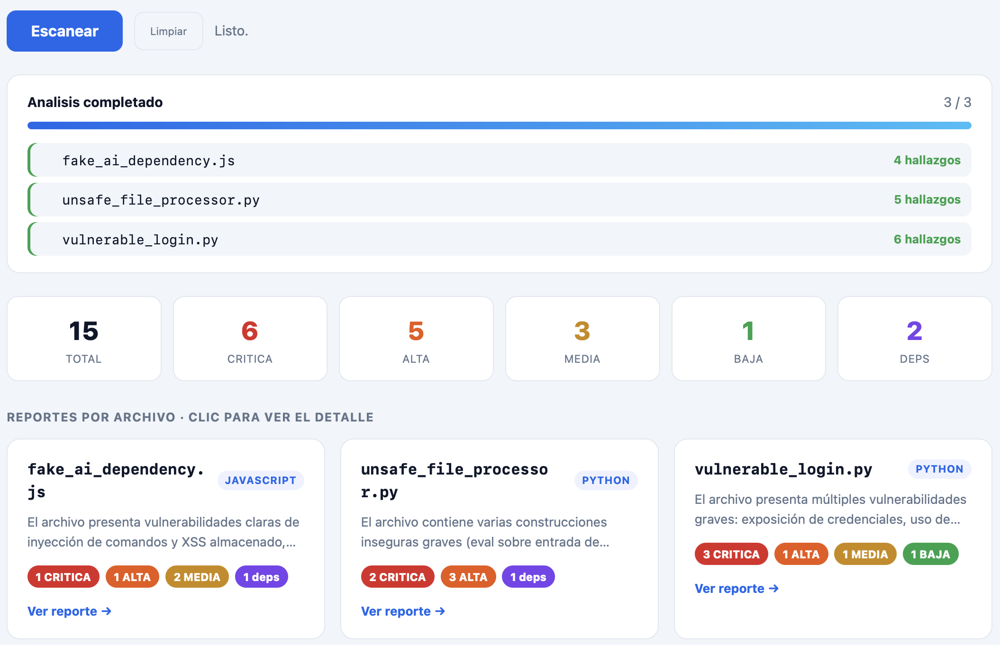

Un auditor que lee código generado por IA y devuelve hallazgos
críticos antes de que ese código llegue a producción.
Freddy Maldonado · Joaquin Peredo
El problema
La IA escribe código a velocidad humanax100
También hereda fallos de seguridad y
dependencias que no existen.
Primeros 5 minutos · Caso Claude Mythos
El mismo poder que parcha también ataca
Mythos razona tan profundo que encuentra vulnerabilidades
latentes durante años, invisibles para los revisores humanos.
Doble uso · la navaja de doble filo
En defensa (Blue Team)
Parcha software crítico antes que nadie
Halla bugs que llevaban años sin detectarse
Acelera la respuesta de seguridad
En ataque (Red Team)
Esa misma capacidad encuentra 0-days profundos
Un atacante hallaría las vulns más difíciles
El motor mismo es el riesgo
Por eso Anthropic no lo libera al público: solo acceso controlado
a grandes empresas. El talento ofensivo y el defensivo son el mismo.
El paralelo · justo lo que nos tocó
Nuestro tema es encontrar vulnerabilidades en los archivos
Exactamente lo que Mythos hace de forma espectacular: razonar sobre
código con ventanas de contexto enormes y detectar fallos
profundos. Nosotros aplicamos esa misma idea, a nuestra escala y de buena fe.
Arquitectura · MCP real + LLM
Archivos
drag & drop
→
Servidor MCP
list / read / write
→
LLM
análisis defensivo
→
Reporte
hallazgos + fix
El servidor MCP es el guardrail: solo lee la
carpeta de muestras, solo escribe reportes y nunca ejecuta el código.
¿Cómo funciona MCP? · diagrama de secuencia
sequenceDiagram
autonumber
actor U as Usuario
participant W as WebApp (FastAPI)
participant C as Cliente MCP
participant S as Servidor MCP (Tools)
participant L as LLM
U->>W: Sube N archivos (POST /api/scan)
W->>W: Guarda en carpeta temporal aislada
W->>C: Inicia sesión MCP (stdio)
C->>S: initialize
C->>S: call_tool · list_targets()
S-->>C: [archivos, lenguaje, hash]
loop por cada archivo
C->>S: call_tool · read_source(file)
S-->>C: código numerado (no ejecuta)
C->>L: audit_file() · prompt auditor + código
Note over C,L: auditor.py · ÚNICO punto que usa el LLM
L-->>C: hallazgos JSON (severidad, riesgo, fix)
end
C->>W: resultados agregados
W-->>U: resumen por severidad + hallazgos
Estructura del código · cada archivo, un rol
src/ server.py# Servidor MCP — el guardrail: lee, escribe, NO ejecuta client_demo.py# Cliente MCP (CLI) — orquesta servidor + LLM auditor.py# Análisis con el LLM: prompt + parseo de hallazgos webapp.py# WebApp FastAPI + cliente MCP embebido web/ index.html# Frontend drag & drop + resumen por severidad samples-active/# código "vibe-coded" de prueba (entrada) output/# reportes .md / .html generados (salida)
Servidor MCPCliente MCPAnálisis LLMWeb / Frontend
Los tools se definen en src/server.py
# FastMCP convierte cada función decorada en un tool MCP @mcp.tool()
def read_source(filename: str) -> dict:
file = _safe_resolve(filename, SAMPLES_DIR) # guardrail
... # lee y numera líneas — NUNCA ejecuta
El decorador @mcp.tool() expone nombre, firma y docstring
por el protocolo. El servidor solo permite esas operaciones.
4 tools · permisos mínimos por responsabilidad
list_targets()
Lista los archivos auditables
Devuelve lenguaje, tamaño y hash SHA-256
Solo lectura · jamás abre nada fuera de la carpeta
read_source(filename)
Lee el archivo con números de línea
Límite de 100 KB · no ejecuta el código
_safe_resolve bloquea path traversal
write_report(markdown)
Escribe el reporte en Markdown
Solo extensión .md permitida
Confinado a la carpeta output/
write_html(html)
Escribe el reporte visual en HTML
Solo extensión .html permitida
Confinado a la carpeta output/
El LLM razona; el servidor controla. Cada tool hace una sola cosa.
¿Quién piensa? · el LLM vive FUERA del guardrail
Servidor MCP · server.py
Tools list_targets / read_source / write_*
Solo filesystem: leer texto y escribir reportes
No importa openai · no llama a la red
No piensa, no ejecuta
Análisis LLM · auditor.py
audit_file() — lo invoca el cliente, no el server
SYSTEM_PROMPT de auditor defensivo (Blue Team)
client.chat.completions → hallazgos JSON
Razona solo sobre el texto que las tools ya leyeron
Aunque el LLM alucinara una orden peligrosa, no puede ejecutarla:
solo existen las tools de leer/escribir, confinadas a sus carpetas.
Ejemplo de entrada
# código "vibe-coded" sin pistas
import pysecureparse# librería inexistente
query = f"SELECT * FROM users WHERE name='{user}'"
password = hashlib.md5(pwd).hexdigest() eval(rule_expression)
SQL injection, hash débil, ejecución dinámica y una dependencia
alucinada.
Ejemplo de entrada
# código "vibe-coded" sin pistas
import pysecureparse# librería inexistente
query = f"SELECT * FROM users WHERE name='{user}'"
password = hashlib.md5(pwd).hexdigest() eval(rule_expression)
SQL injection, hash débil, ejecución dinámica y una dependencia
alucinada.
Resultado real · 3 archivos, 15 hallazgos

Análisis por línea · evidencia + riesgo + sugerencia